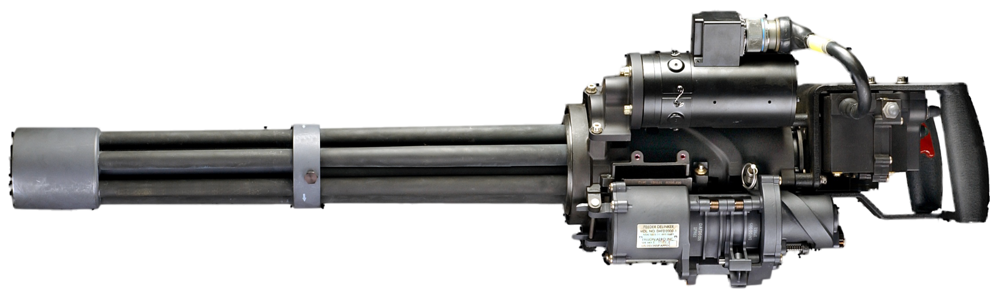

M134迷你砲機槍

M134迷你砲（M134 Minigun）是一款7.62公釐口徑的格林式旋管機槍，使用電動機來旋轉多個同軸槍管並操作槍機，可以達到極高的射速（每分3000發）。「迷你砲」現在已經成為了外部供電來轉動的格林線膛槍的代名詞，但有時候可能不管是不是需要外部供能來轉動還是線膛或滑膛都會以「迷你砲」來稱之。但較明確的來說，「迷你砲」最先還是指奇異的產品，會稱作「迷你」是因為與M61火神式機砲來比較的關係。
- 具體結構方面以美國陸軍M134型速射機槍為例，採用迴轉聯動裝置，組件包括一台驅動電機、六個槍機部件、六個可移動的槍機軌道、槍管套管部件、後部槍枝架、六根槍管、槍管夾持部件、保險部分、套管蓋和二個快速釋放銷。因為轉動部分在固定套管蓋內，槍機部件和套管蓋主凸輪軌道隨動，引起槍機部件隨著移動軌道往復移動，擊發彈藥。每個槍管被固定安裝在槍管夾具部件中和槍機部件成一直線，在一台電機驅動下轉動。基本尺寸：長度29.5英吋，重量35磅，有效射程1,500公尺。該機槍若以3,000發/分鐘射速在1秒鐘內水平面±45度掃射，則在200公尺距離上每間隔3.14公尺，便命中一發子彈。採用北約組織的7.62公釐口徑標準彈藥，包括M59、M80實心彈（Bali）、M60高能試驗彈（HP）、M6l穿甲彈（AP）、M62曳光彈、M63訓練彈。M134型可靠性（MRBF）為250,000發，壽命600,000發，每根槍管壽命10,000發，散布為6.5密位（80%的命中數）。
M134採用格林機槍的原理，用電動機帶動六根槍管旋轉，在每根槍管迴轉一圈的過程中，它所對應的槍機則在和槍管一起旋轉的旋轉體上的導槽內作往復直線運動，依次進行輸彈入膛、閉鎖、擊發、退殼、退殼等一系列動作，所以射速極高。雖然高速旋轉的槍管會因離心力的作用導致射擊散布增大，但射速高、火力強這兩點能彌補精度的不足，反而使得M134成為一種十分有效的殺傷集團有生目標的武器。此外，由於射速是由直流電動機（28伏）的轉速來確定的，所以只要改變電流大小，就獲得從300發/分到6,000發/分之間的任意一個射速，但在大多數情形下，M134的射速一般只設置到2,000發/分至4,000發/分的範圍內。
M134的脫鏈供彈機結構十分複雜，其供彈動作是在旋轉體的帶動下完成的，脫鏈方式為縱向直推。供彈機的主要部件有脫鏈轉輪、輸彈輪等。脫鏈轉輪由旋轉體通過齒輪帶動而迴轉，兩者的轉速比是6：7。輸彈輪上有7個容彈槽。導板固定在機匣上，它是一個重要的零件。其作用是使槍彈準確地從供彈機進入旋轉體並置於拉殼鉤槽內，它的另一個作用是在槍彈擊發以後使彈殼脫離旋轉體，以完成退殼動作。彈鏈通過柔性輸彈道進入脫鏈供彈機。如果輸彈道較長（1.5公尺以上），或是曲率半徑太小，則通常會在彈箱上再裝一個輸彈助推電動機。